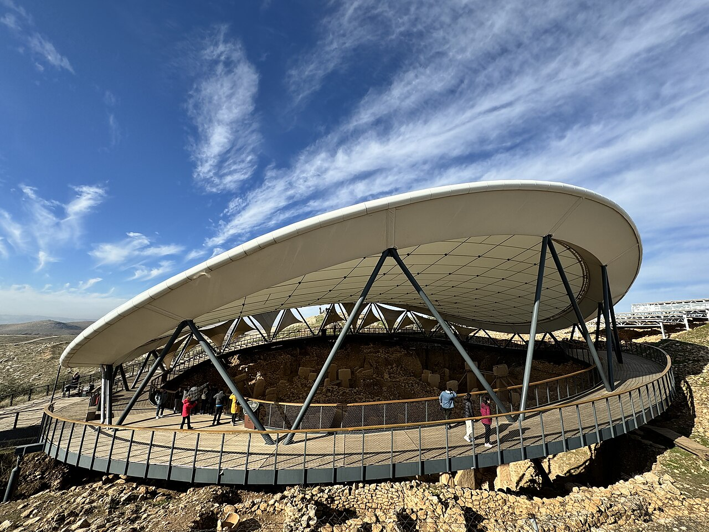
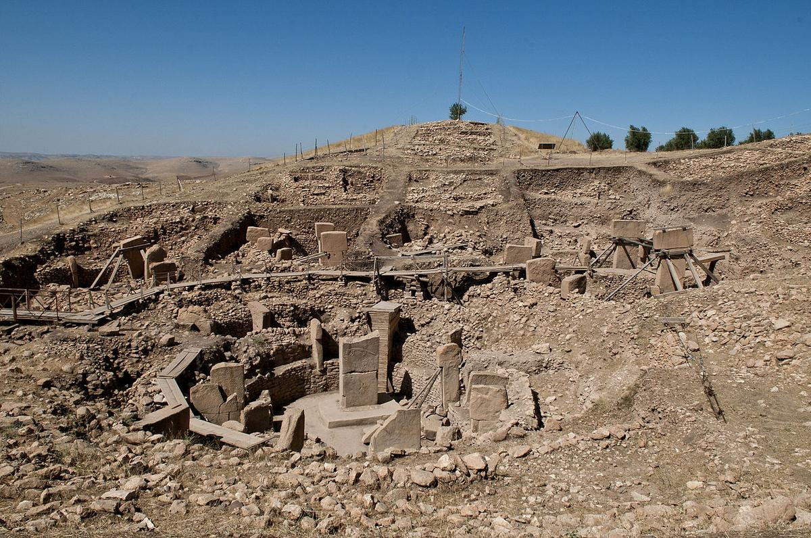
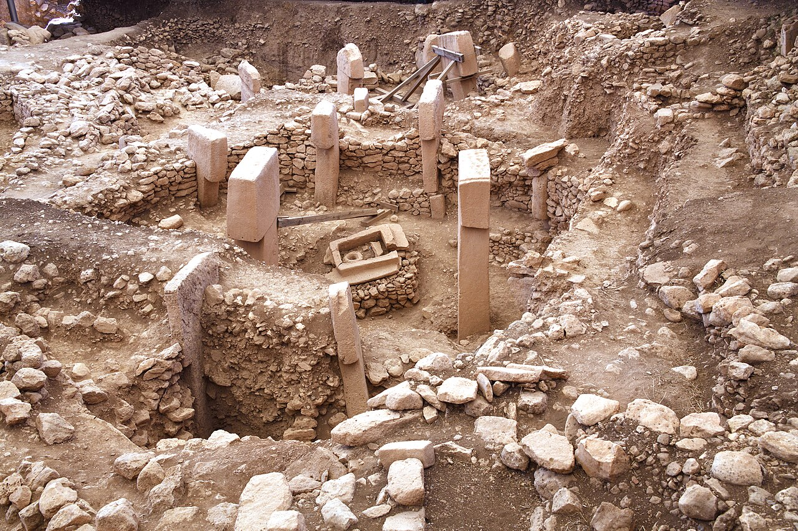
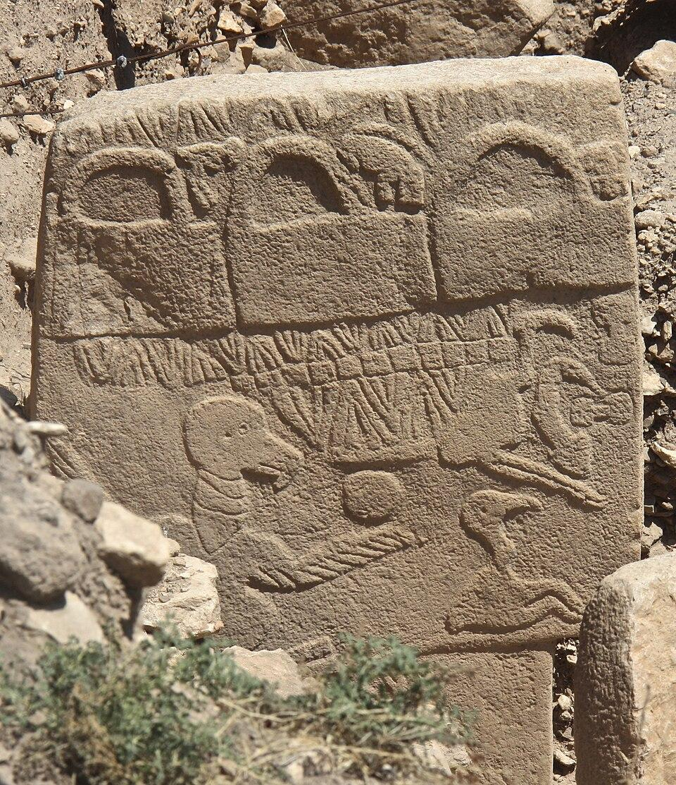
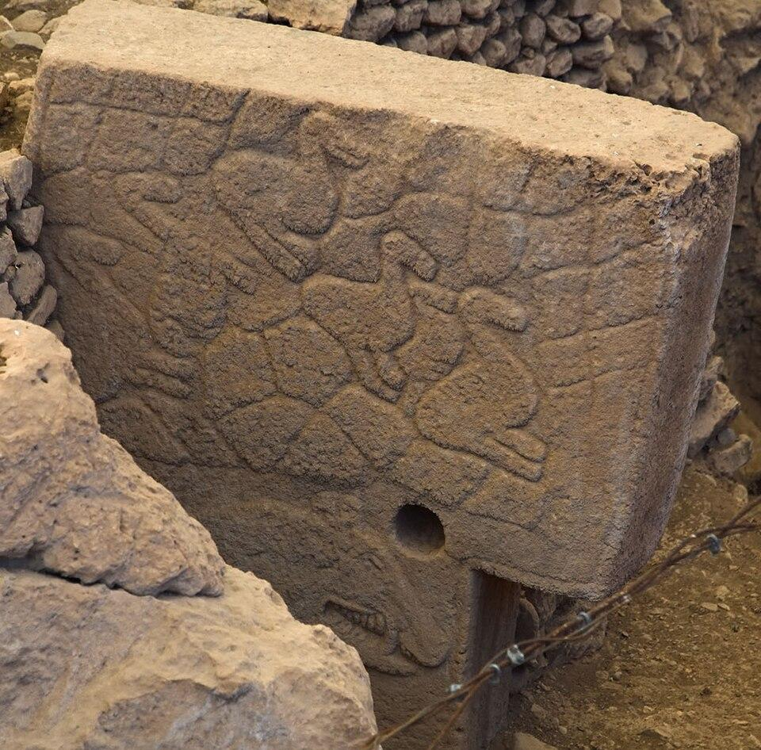
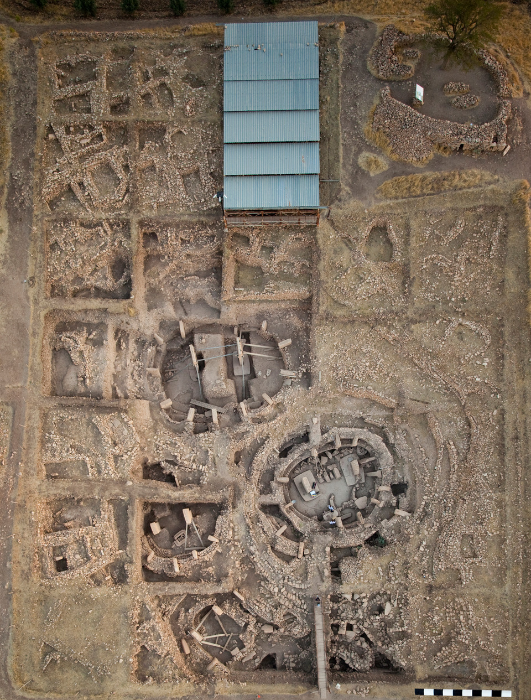

Yaklaşık otuz yıl öncesine kadar, Neolitik devrimin temel anlatısı oldukça net görünüyordu: İnsan toplulukları önce tarımı geliştirmiş, ardından yerleşik hayata geçmiş ve bu yeni sosyal düzen içinde dinî mimari ve ritüel yapılar ortaya çıkmıştı. Ancak Göbekli Tepe kazıları, bu kronolojinin en azından bazı bölgelerde tersine işlemiş olabileceğini düşündürdü. Bugün Göbekli Tepe yalnızca erken Neolitik bir ritüel alan olarak değil, insan topluluklarının nasıl organize olduğu sorusunu yeniden açan bir arkeolojik veri seti olarak değerlendiriliyor.
Keşiften Paradigma Tartışmasına

Alan, Güneydoğu Anadolu'da, Şanlıurfa platosunun kuzeyinde yer alır. 1990'lardan itibaren yürütülen sistematik kazılar, özellikle Alman arkeolog Klaus Schmidt'in çalışmalarıyla uluslararası literatürde büyük yankı uyandırdı. Schmidt'in temel yorumu radikaldi: Göbekli Tepe bir yerleşim değil, esas olarak ritüel amaçlı kullanılan anıtsal bir merkezdi.
Bu yorum, ilk etapta temkinli karşılandı. Çünkü anıtsal mimarinin, karmaşık yerleşik toplumların ürünü olduğu varsayımı arkeolojide uzun süredir baskındı. Ancak radyokarbon tarihleme verileri, Göbekli Tepe'nin Pre-Pottery Neolithic A evresine, yani MÖ 10. binyıla uzandığını net biçimde gösterdi. Bu tarih, tarımın tam anlamıyla kurumsallaşmasından önceye işaret ediyordu.
Avcı-Toplayıcı Toplumlar ve Anıtsal Mimari Problemi

Göbekli Tepe'de ortaya çıkarılan T biçimli kalker sütunlar, yalnızca boyutları nedeniyle değil, üretim süreçleri nedeniyle de dikkat çekicidir. Bazıları 5 metreden uzun, 10–20 ton ağırlığındadır. Bu ölçekte taş blokların kesilmesi, taşınması ve dikilmesi, ciddi bir iş gücü organizasyonu gerektirir.
Bu durum, erken Holosen avcı-toplayıcı toplulukların sosyal kapasitesine dair eski varsayımları zorluyor. Çünkü bu ölçekte bir mimari faaliyet yalnızca teknik bilgi değil, aynı zamanda kolektif planlama, iş bölümü ve güçlü motivasyon gerektirir. Göbekli Tepe bu noktada şu soruyu ortaya çıkarır: Bu toplulukları bu kadar büyük projeler için bir araya getiren şey neydi?
Savunma ihtiyacı için yapılmış bir yerleşim planı yoktur. Kalıcı konut mimarisi sınırlıdır. Bu nedenle birçok araştırmacı, alanın esas işlevinin ritüel toplantılar ve topluluk konsolidasyonu olduğunu düşünüyor.
Hayvan Kabartmaları: Bir Sembol Dilinin İzleri

Göbekli Tepe'deki kabartmalar erken Neolitik ikonografinin en karmaşık örneklerinden biri olarak kabul edilir. Ancak bu ikonografiyi çözmek beklenenden çok daha zordur. Çünkü yazı yoktur, mitolojik metin yoktur, doğrudan yorum yapabileceğimiz anlatı sistemi yoktur.
Örneğin yılan figürleri oldukça yoğundur. Bu tekrar, yılanın sembolik açıdan önemli olduğunu düşündürür. Daha geç dönem Yakın Doğu mitolojilerinde yılanın ölüm, yeniden doğuş ve yeraltı ile ilişkilendirilmesi, bazı araştırmacıları sembolik süreklilik ihtimaline yöneltmiştir. Ancak arkeolojik metodoloji açısından bu tür doğrudan kültürel süreklilik yorumları dikkatle ele alınmalıdır.

Tilki figürleri ise daha karmaşık bir yorum alanı sunar. Tilki, insan ekonomisinde merkezi bir hayvan değildir. Bu nedenle bazı araştırmacılar tilkiyi "sınır varlık" sembolizmi ile ilişkilendirir — yani doğa ile kültür, düzen ile kaos arasında duran varlıklar. Ancak bu yorumlar hipotez düzeyindedir.
Bugün için en dürüst akademik pozisyon şudur: Göbekli Tepe ikonografisi henüz tam olarak çözülebilmiş değildir.
Bilinçli Gömülme: Ritüel Sonlandırma mı?

Göbekli Tepe'de yapıların kullanım sonrası sistematik biçimde doldurulması, alanın en tartışmalı özelliklerinden biridir. Bu dolgu işlemi doğal süreç sonucu oluşmuş gibi görünmez; düzenlidir ve kasıtlıdır.
Bu durum bazı antropolojik modellerle paralel yorumlanmıştır. Bazı kültürlerde kutsal yapılar kullanım döngüsü sonunda ritüel olarak "kapatılır". Ancak Göbekli Tepe için bu yorum henüz doğrudan kanıtlanabilmiş değildir. Yine de alanın sadece inşa edilen değil, aynı zamanda "kontrollü biçimde terk edilen" bir yer olduğu açıktır.
Tarım mı Ritüeli Doğurdu, Ritüel mi Tarımı?
Göbekli Tepe'nin en radikal etkisi burada ortaya çıkar. Eğer bu alan, düzenli ritüel toplantıları için kullanıldıysa, bu toplantıların sürdürülebilmesi için büyük miktarda gıda üretimi gerekmiş olabilir. Bu durumda tarım, ideolojik bir devrim değil, sosyal organizasyonun lojistik sonucu olarak ortaya çıkmış olabilir.
Bu görüş bugün hâlâ tartışmalıdır. Ancak Neolitik devrimin yalnızca ekonomik bir dönüşüm olmadığı fikri artık güçlü biçimde tartışma alanına girmiştir.
Güncel Akademik Konsensüs Ne Söylüyor?
Bugün literatürde en temkinli yaklaşım, Göbekli Tepe'nin tarımı başlatan faktör olmadığını, ancak karmaşık sosyal ağların oluşumunu hızlandırmış olabileceğini kabul eder. Daha da önemlisi, Göbekli Tepe insan topluluklarının kolektif sembol üretme ve ortak anlam etrafında birleşme kapasitesinin düşündüğümüzden çok daha eski olduğunu gösterir.
Belki de Göbekli Tepe'nin en önemli katkısı budur: İnsan topluluklarının önce üretim için değil, önce anlam için bir araya gelmiş olabileceğini göstermesi.